Hey, I'm Ilan Luciano, a passionate software developer and entrepreneur. Throughout my six years of professional experience, I have served as the lead developer of an online gaming platform, taught courses on game development at a STEM summer program, led development of a digital attendance management system, worked with a team to enhance a digital research study management platform, consulted on web development projects for non-profit and business clients, and worked on a handful of passion projects. Some of my professional work and many of my hobby projects are listed below.
In addition to my software development background, I have experience working collaboratively with a team of developers and marketers and communicating professionally and reliably with clients.
I am currently pursuing a bachelors of science at Lehigh University’s Computer Science and Business Honors Program.
The programming languages, technologies, and platforms I have worked with are:
- Javascript (both Node and frontend)
- HTML and CSS
- Java
- PHP
- C# (inside and outside of Unity)
- Golang
- Python
- MySQL and PostgreSQL (Prisma ORM and GORM)
- Socket.io, Express, JWT Authentication
- Cloudflare, Github, AWS EC2 and other cloud hosting
- Search Console, DevTools Lighthouse, and SEO
- Google Analytics
Feel free to contact me at your convenience:
- Phone: (347) 921-0533
- Email: ilan@ilan-not-elon.com
- Linkedin: IlanLuciano
My resume is available upon request.
Flash Study
Flash Study is a platform with effective exam preparation tools including flashcards and practice questions. The practice questions feature is similar to Quizlet Learn in that it quizzes you on a set of course materials. There is also an experimental note creation and sharing feature.
I have been developing this solo as a side project. The site may have incomplete features. I initially created it to prepare for my foreign language exams.
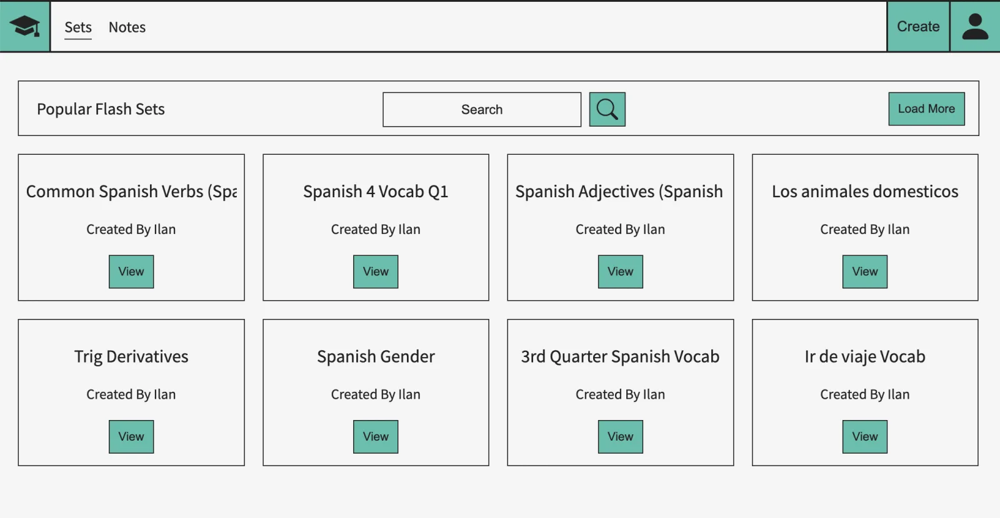
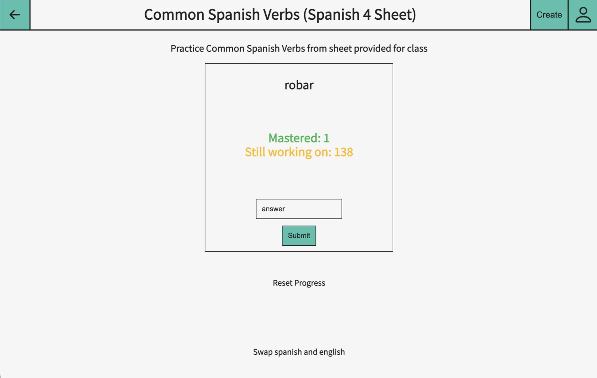
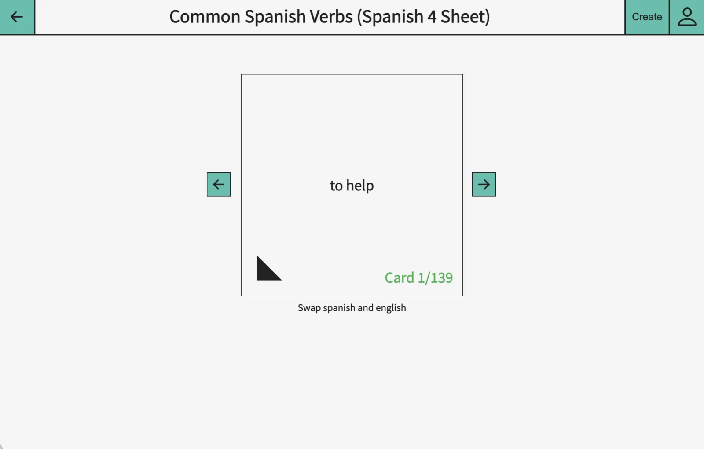
Asset Tracker
This is a portfolio tracking tool I built using Claude and Copilot. It brings multiple investment, cash, crypto, and debt accounts together in one place, so I can see both long-term trends and real-time performance in one place. It supports brokerage, Roth IRA, Traditional IRA, cash (in any ISO currency), crypto, debt (credit cards and other balances that net against your total), and watchlist account types, with daily close prices and live quotes pulled from Yahoo Finance. Accounts can be linked through Plaid for automatic transaction and balance syncing, and a spending-analysis view breaks down where the money actually goes.
Under the hood it uses C++ for the data aggregation, storage, and retrieval system — a multithreaded HTTP server with on-disk binary persistence, in-memory quote caching, and a parsed-data cache that skips re-reading files that haven't changed. Responses are gzip-compressed and support conditional (ETag) requests, while the static frontend throttles its polling when the market is closed or the tab is backgrounded. It's the first hobby project I've created using AI software development agents.
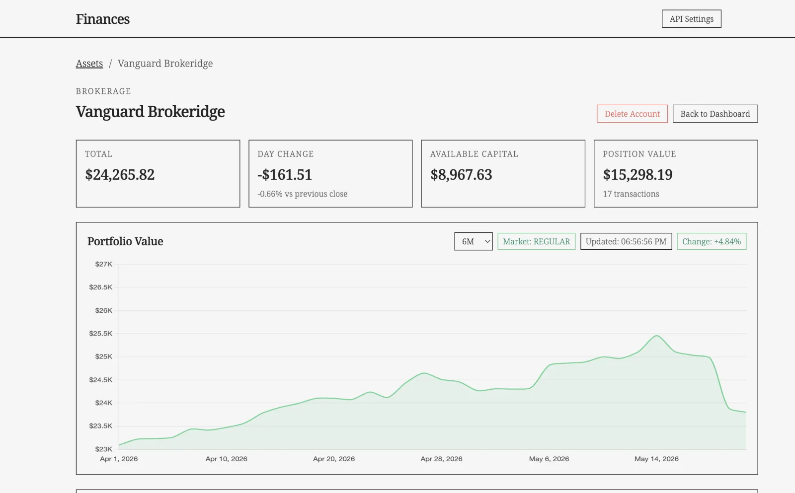
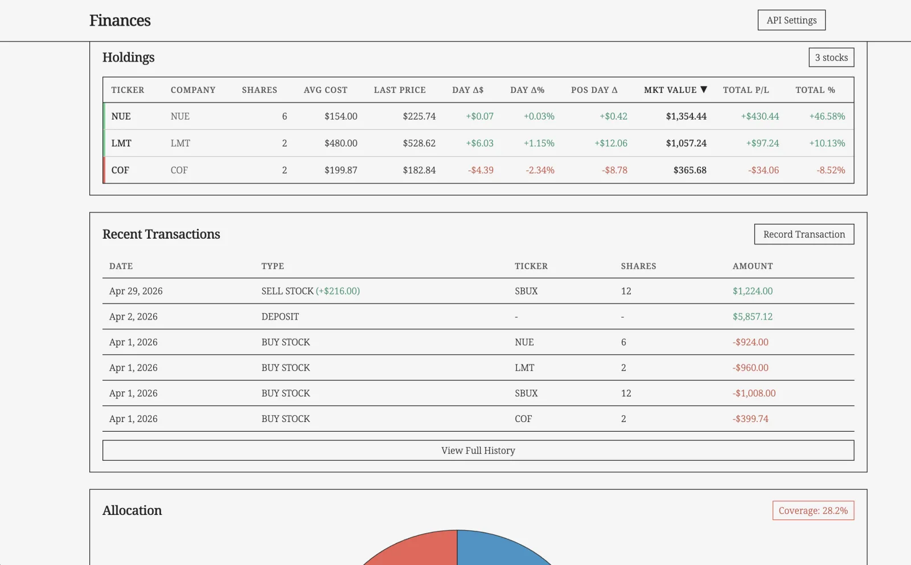
Travel Tracker
Travel Tracker is a web app for visualizing the countries, US states, and Canadian provinces you've visited (and ones you're planning to visit) on an interactive world map. The map view is similar to the colored maps people share on social media to show off their travels, but with the ability to log visits, mark places as planned, and browse place lists alongside the map.
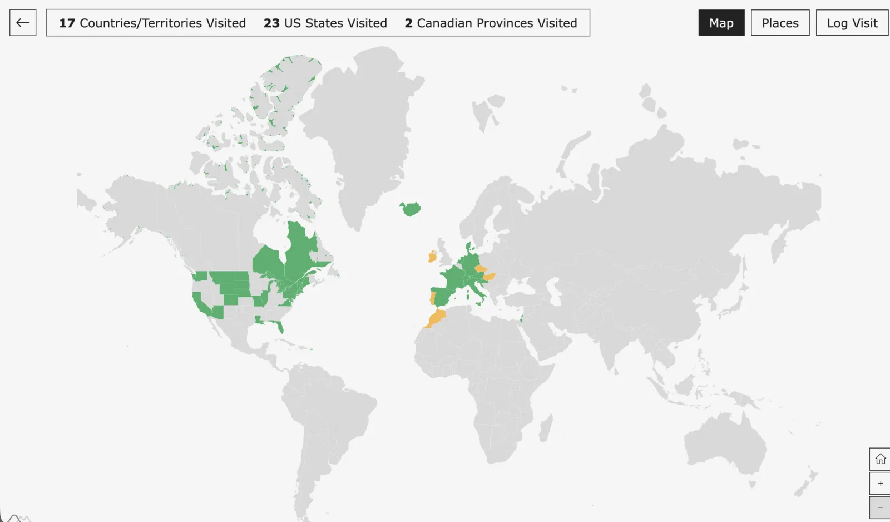
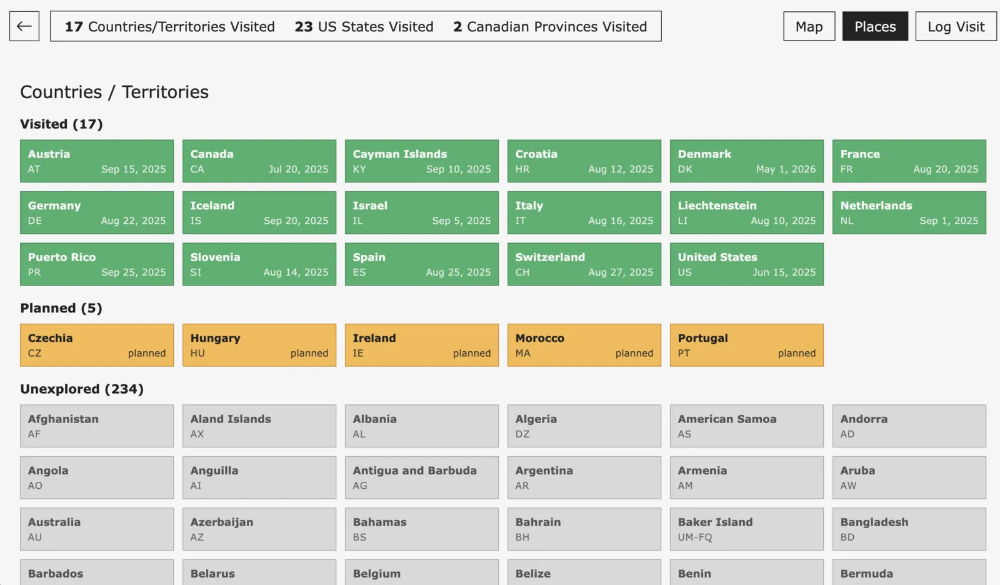
Spotify Registration Clone
This is a replication of Spotify's registration flow, created with a C# web server I developed. I used HTML, CSS, and JS to create a clone of the user interface. I only copied colors from the original website, everything else was cloned through experimentation to make it as close to the original interface as possible. It isn't visible in these images but the error messages are responsive and the animations are replicated from spotify as well.
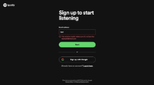
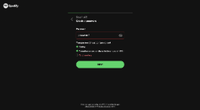
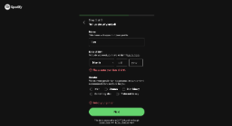
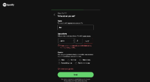
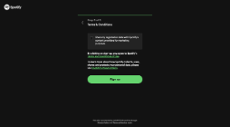
Hexholm
Hexholm is a real-time, multiplayer implementation of Catan for two to four players." Players spin up a table and invite friends with a room code or shareable link, or fill empty seats with AI opponents. It covers the full base game — building settlements, cities, and roads; development cards; the robber; longest road and largest army; and bank, harbor, and player-to-player trading — all enforced on the server so no one can cheat.
Under the hood, each game room is a Cloudflare Durable Object that holds the authoritative game state and coordinates every player over their own WebSocket, backed by a pure, deterministic rules engine." The frontend is a React app that reproduces the game's board and interface; the backend runs entirely on Cloudflare Workers with per-room state, automatic reconnection, rate limiting, an idle-takeover system that hands an abandoned seat to a bot, and an admin dashboard tracking players and match statistics.
Hexholm is another hobby project I built end-to-end with AI software development agents." The rules engine is fully test-covered, and empty seats are played by heuristic bots that trade with the bank and contest the special cards — a decent opponent for casual and learning players.
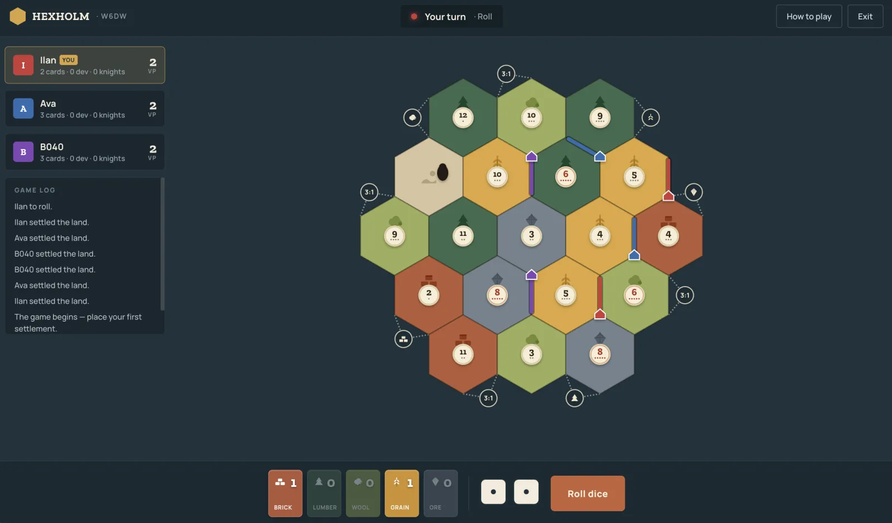
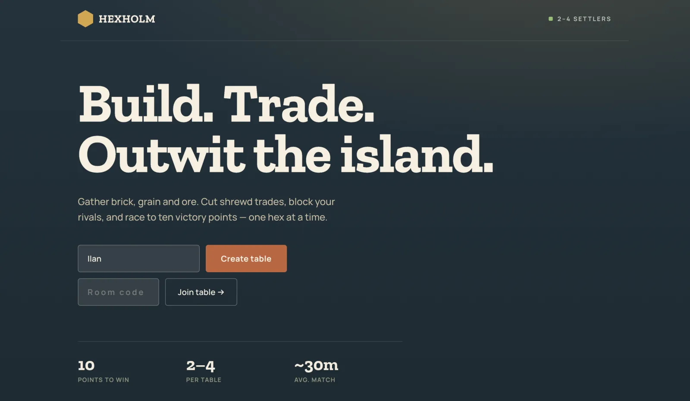
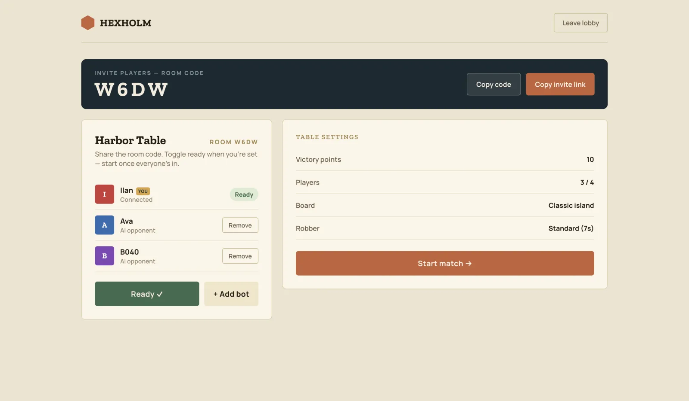
Tabout
Tabout is a multiplayer educational game. Educators can create accounts and make sets of questions to share with their students. They can then host games using these sets that students can join. Students are split into two teams and compete in a battle displayed on the hosts screen by answering questions correctly.
I created Tabout in collaboration with my school's computer science club. Other members helped to plan and design the game as well as create the battling animation. I created the website's interface and multiplayer functionality.
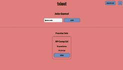
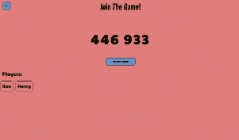
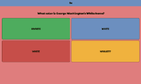
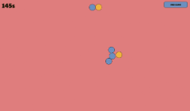
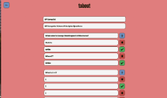
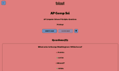
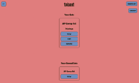
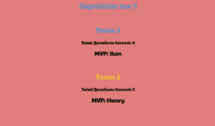
Totally Science
Totally Science was an online gaming website founded in 2021 that started growing rapidly in early 2022. It had a library of hundreds of free to play games and a proxy that allowed you to access any website semi-anonymously. Every month over 250,000 users from all over the world played their favorite games on Totally Science.
I served as the lead developer of Totally Science until it was acquired in March 2024. My role consisted of developing and maintaining the Node JS based backend as well as making improvements to the performance and usability of the frontend codebase.
The website available at totallyscience.co is no longer the one I developed. The new owners have replaced it with a different online gaming site. The images below are from the version I developed.
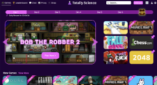
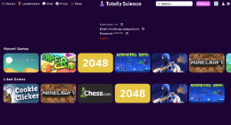
Unity Suika Clone
This is a clone of Suika, commonly known as Watermelon Game, that I created in Unity for a course I taught at Discover Camp, a STEM-focused summer camp. Using this copy as the demo, I taught a group of elementary and middle schoolers how to use the Unity game engine and C# to create this game.
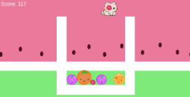
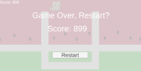
Lehigh Hillel Website
Developed and designed the website for Lehigh University's Hillel chapter.
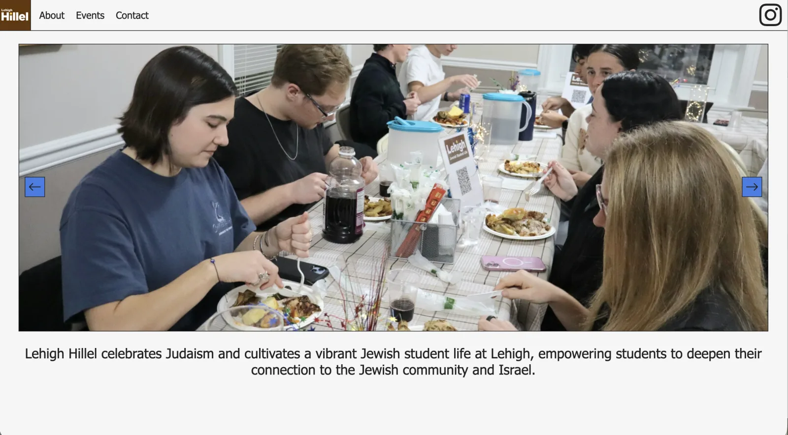
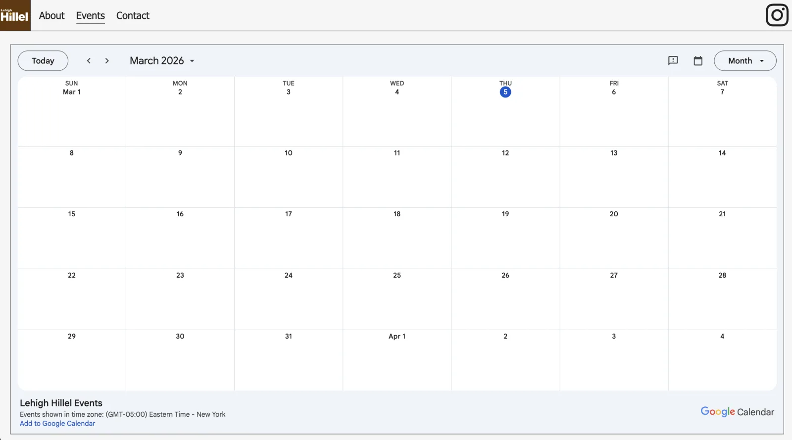
Efficiency Lists
Efficiency Lists is a simple to-do list website. It includes the ability to add, remove, and edit items with convenient keybinds. You can also categorize the items into topics for further organization.
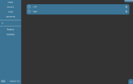